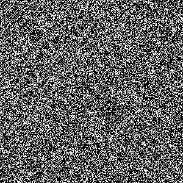
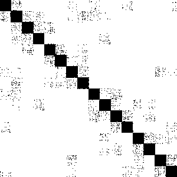

Mt-Metis is a multi-threaded multilevel graph partitioning and sparse matrix ordering tool based on the serial Metis graph partitioning tool.
Source Code
Latest - mt-metis-0.7.2.tar.gz
Archive
Building mt-metis requires a C99 compiler supporting OpenMP specification 3.0 or greater (almost all of my testing is with GCC 4.6.3 through 5.1), a c++ compiler supporting C++11, and CMake. The configure script requires Bash, however it is possible to do the configuration by hand. As of release 0.3.0, mt-metis uses the traditional unix style build scripts:
./configure
make
make install
UsageTo partition a graph (into 16 parts), the simplest method is:
./mtmetis 4elt.graph 16 4elt.part16
This will give you the partition ID for each vertex in the file 4elt.part16.
 To order a structurally symmetric sparse matrix/graph via nested dissection:
./mtmetis -pnd 4elt.graph 4elt.perm
This will give you the new row/column ID for each row/column in the file 4elt.perm.
There are a number of additional options, which can be viewed via:
./mtmetis -h
APIThe file mtmetis.h is the header that should be included by external programs wishing link to mt-Metis. As of release 0.5.0, the api functions now mimick that of Metis (e.g., MTMETIS_PartGraphKway()).
Full documentation can be found here.
PublicationsA parallel hill-climbing algorithm for graph partitioning
@inproceedings{mtmetis2016icpp,
title={A parallel hill-climbing algorithm for graph partitioning},
author={LaSalle, Dominique and Karypis, George},
booktitle={Parallel Processing (ICPP), 2016 45th International Conference on},
year={2016},
organization={IEEE}
}
Efficient Nested Dissection for Multicore Architectures
@incollection{mtmetis2015europar,
title={Efficient Nested Dissection for Multicore Architectures},
author={LaSalle, Dominique and Karypis, George},
pages{467--478},
booktitle={Euro-Par 2015: Parallel Processing},
year={2015},
publisher={Springer Berlin Heidelberg}
}
Multi-threaded Graph Partitioning
@inproceedings{mtmetis2013ipdps,
title={Multi-threaded graph partitioning},
author={LaSalle, Dominique and Karypis, George},
booktitle={Parallel \& Distributed Processing (IPDPS), 2013 IEEE 27th International Symposium on},
pages={225--236},
year={2013},
organization={IEEE}
}